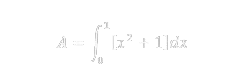
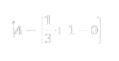

Calcular el área bajo una curva es un problema común en cálculo integral. Se utiliza la integral definida para encontrar el área entre la curva de una función 𝑓(𝑥) y el eje 𝑥 en un intervalo [a,b].
La función dada es 𝑦=𝑥**2+1. Queremos encontrar el área bajo esta curva desde x=0 hasta x=1. El área bajo una curva entre dos puntos se puede calcular mediante una integral definida. La integral definida de la función es: 
Para calcular la integral, primero encontramos la antiderivada. Por lo tanto, la antiderivada de es:
Esto significa que debemos calcular

Evaluando los términos obtenemos.
El área bajo la curva y=x 2+1 desde x=0 hasta x=1 es: